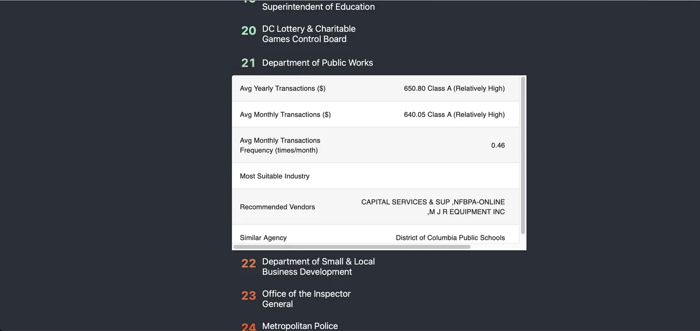
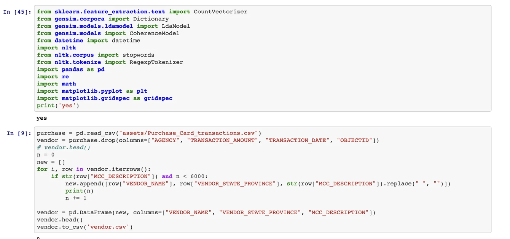

First Prize in Bill.com Track
Link is a vendor recommendation service and analytics engine for agencies built using Bayesian inference, created to help you find the best common vendors that agencies like yours prefer to use.
Check out this post to learn about our amazing project
This is an introduction of our project on Youtube:
https://www.youtube.com/watch?v=Wiz5L2lDhIQ
Feb 5, 2021
I have just experienced the most intense and rewarding 24 hours hackathon. This is the second hackathon that I participated at Rice (the first one didn't go well ☹️). Because of the time difference of 12 hours, I had to wake up super early to search for teams. I had to compete with 2-3 other people to get into my team and it was worth it.
First 6 hours
In the Datathon, we got to choose between some topics from different companies but we were in disagreement of which topics should we choose. We spent 6 hours debating the ideas and I was already tired and frustrated. I felt really scared that my team wasn't able to put anything up. Our list of pros and cons of each idea is just super longg
Finally, I proposed that we should continue with the transaction and financial data from Bill.com because it had the biggest dataset and we could do a lot of cool things with financial data. This is the best decision we made and we immediately assigned tasks to people and started working.
Our idea popped out
Given the wealth of transaction data provided by Bill.com, we sought to identify vendor-to-vendor, agency-to-agency, and agency-to-vendor relationships that could be used to identify similar agencies and vendors. Specifically, our goal was to identify a quantitative method of measuring similarity among vendors and agencies in order to make custom-tailored recommendations.
What it does
Link is able to suggest vendors within similar industries given the vendors it most often interacts with. You can enter the name of an agency, and gain access to a variety of analytics, including customer spending habits, most suitable industry, and vendors the agency interacts with the most. Recommendations of other vendors are also provided, as well as similar agencies based on spending habits and industry preference.
Here is a visual look of the web application I did. I created the website using Material UI styled components and ReactJS

How we built the product
We establish similarities between vendors using Latent Dirichlet Allocation (LDA), which is a Bayesian bag-of-words approach to finding unifying topics for words. Each of the 450,000 transactions has a vendor with a list of descriptors, which we defined as its characteristics. Once we gathered and tokenized these characteristics for each vendor, we then ran it through our Bayesian model and concluded that the characteristics converged under six main topics, which we call industries. Our LDA model was able to slowly inch the characteristics’ probabilities for topics towards convergence, resulting in these characteristics, which is how we find similarities between vendors. We also performed some filtering and suggesting on the website.

What I am proud of
I was able to extract and clean the data to optimize it for Bayesian inference and LDA. This is a big dataset so it is challenging and time-consuming. However, I still provided cleaned excel files with the data
I also created a user-friendly and interactive website to integrate everything we worked on and allow the companies to search and get insightful analytics.
What's next for Link
Given more time and resources, we’d want to iterate upon our model and improve it by feeding in more data and possibly exploring other models. We’d also want to continue to polish our interface so that agencies and vendors can better understand their analytics and make the most of our results.
Thank you for reading this post. If you want to see the work we have done check out this Github Page